LLM-MARK：面向本地设备上生成式AI真实使用的高效大语言模型（LLM）水印计算框架
该论文针对LLM水印方案计算开销过高、难以在算力受限的本地设备上实时执行的问题，提出首个面向LLM水印的算法-架构协同设计计算框架LLM-MARK。方法上采用LFSR生成的Toeplitz哈希硬件加速green list生成与查找（lookup平均加速243x），并设计剪枝双调排序网络PBSN对大词表logit向量做top-k排序（较快速排序加速34.7x）。设计以16-bit定点实现并在Xilinx XCZU15EG FPGA上完成原型验证：与fp32相比无水印损失，端到端水印生成加速30x、水印检测加速22.8x，含LLM执行在内每token平均延迟0.052s，检测置信度100%。该工作属于AI安全/内容认证方向的专用硬件加速，与团队存储/互连IP主业无直接交集，但其算法-硬件协同设计与定点量化影响分析方法具一般性参考价值。
现有基于green list机制的LLM水印方法在高端处理器（AMD 3995WX + RTX A6000，OPT-125M小模型）上的水印操作运行时间甚至超过LLM模型本身，主要开销来自词表lookup、排序与green list生成；而本地设备（移动处理器或低成本小型FPGA）算力有限，无法实时完成水印生成与检测。论文要解决的是如何在资源受限的本地设备上高效执行LLM水印，以实现生成式AI的真实性认证与模型IP保护。
算法-架构协同设计：(1) 用LFSR（MLFSR+KLFSR）构造Toeplitz哈希矩阵，仅需(m+n-1)位即可定义整个矩阵而非n×m位，单周期返回查找结果并支持16-bit用户密钥，用于green list生成与lookup的硬件加速；(2) 提出剪枝双调排序网络PBSN，在bitonic merge中对子向量排序后仅保留top-k（k=40）值，剪除不可能进入最终top-k的元素，用128个Block RAM与128元素16b比较器阵列在FPGA上实现；(3) 顶层架构包含prediction buffer、watermark buffer、pruned bitonic sorter、hash network与LLM-MARK控制逻辑，采用流水线化的生成与查找；(4) 以16-bit定点替代浮点，并分析量化精度对green list相似度、水印z score与文本质量的影响。
Xilinx XCZU15EG FPGA端到端评估：水印生成相比FPGA基线实现加速30x，水印检测加速22.8x
Toeplitz哈希lookup在不同green list尺寸下平均加速243x；不同矩阵规模（26/28/30/32列+行位数）下哈希吞吐平均提升14.5x
剪枝双调排序器相比未剪枝bitonic sorter减少4.9x运行周期，相比快速排序（quick sort）加速34.7x
16-bit定点与fp32相比所有测试用例均无水印损失；约10-bit附近出现大幅相似度下降，z score自10-12 bit开始退化
C4数据集100个随机样本：水印文本z score均高于4.0、未水印文本均低于4，检测置信度100%；含LLM执行在内每生成token平均延迟0.052s
据论文所述为首个面向LLM水印的算法与架构协同设计（codesign）工作：已有方案要么是post-hoc检测器（GLTR、DetectGPT等），要么是纯软件水印算法[6]，其水印操作在CPU上的开销甚至超过LLM本身；本文将green list生成/查找与词表排序映射为专用硬件（LFSR-based Toeplitz哈希+剪枝bitonic排序网络），使资源受限的本地设备能实时执行水印。
相关度级别：low
命中能力域：无明显对应
理由：论文主题是LLM水印的专用硬件加速与FPGA实现，属于AI安全/内容认证方向，与团队LPDDR/HBM/UCIe等存储与互连IP的架构、RTL与验证交付主业无直接技术交集。对照七域逐一判断：2.1面向内存/互连IP架构，本文不涉及；2.2虽属可综合RTL设计范畴，但核心是哈希与排序网络等通用算子加速，未触及团队时序收敛、低功耗、CDC/RDC等工程场景；2.3、2.4、2.5完全未涉及；2.6中FPGA在本文是目标实现平台而非仿真加速/Emulation载体；2.7的AI辅助EDA方向本文亦未涉及（本文是用硬件加速LLM水印，而非AI辅助设计流程）。故判定为low，与上游catalog给出的“无明显对应”标签一致。
建议动作：仅了解结论
Shiyu Guo, Yuhao Ju, Xi Chen, Jie Gu
{ ShiyuGuo2021, YuhaoJu2017, XiChen2020}@u.northwestern.edu, jgu@northwestern.edu
摘要——随着ChatGPT等生成式人工智能（Generative AI）的快速演进，虚假新闻泛滥、大语言模型（Large Language Models, LLMs）被未经授权使用等数据不当行为日益增多，给消费者获取真实信息带来了重大挑战。尽管近期已有新的水印方案被提出以保护大语言模型的知识产权（Intellectual Property, IP），但遗憾的是，其计算成本过高，难以在本地设备上实现其所针对的实时执行。本工作提出了一种专用的硬件高效水印计算框架，可支持在本地设备上进行模型认证。通过采用所提出的用于快速查找的硬件哈希以及剪枝双调排序网络加速，所开发的架构框架能够在小型本地设备上对LLM实现快速高效的水印嵌入。所提出的架构在Xilinx XCZU15EG FPGA上进行了评估，实现了30倍的计算加速，使该架构非常适合集成到本地移动设备中。所提出的算法-架构协同设计框架为LLM滥用带来的紧迫挑战提供了实用的解决方案，为生成式AI时代的知识产权保护提供了可行的硬件解决方案。
生成式人工智能（Generative AI）的最新进展使得高质量的文本生成难以区分其究竟源自人类还是机器。尽管生成式AI为客户支持、内容创作、文章撰写、教育与辅导等人类辅助任务提供了强大的新能力，但近期该技术的爆发式使用要求人们紧急采取行动，在大语言模型（LLM）上实施安全措施。LLM的恶意使用，例如学术活动中的剽窃、伪造新闻或文章的生成、未经授权使用受版权保护的模型，对社交媒体、教育渠道和日常通信中信息内容的完整性构成了重大威胁。作为近期的一项公告，OpenAI、Google等主要AI公司已承诺为AI生成的文本内容提供水印技术。
尽管人们已在LLM生成内容的认证方面投入了大量努力，但一种可行的LLM水印技术仍在开发之中。
本作品根据知识共享署名国际4.0许可协议（Creative Commons Attribution International 4.0 License）进行许可。
DAC '24，2024年6月23—27日，美国加利福尼亚州旧金山 © 2024 版权归所有者/作者所有。ACM ISBN 979-8-4007-0601-1/24/06。https://doi.org/10.1145/3649329.3656545
尽管文献[1]提出了一种深度神经网络（DNN）水印框架，但它无法直接用于语言模型。对于大语言模型（LLM），通常使用两类水印技术。第一类技术使用“事后检测器”（Post-hoc Detectors），其结合启发式方法或基于模型的特征来检测人类自然语言与机器生成模型输出之间的差异。该方法在检测时不改变LLM模型的输出。例如，GLTR [2,3] 检测器采用基于统计方法的解决方案，能够检测生成痕迹，以检查文本是否由模型生成。AI分类器 [4] 是OpenAI推出的一种检测器，通过训练好的模型检测虚假声明来区分AI生成的文本。由于在短文本方面的局限性，以及可能被误导性的人类撰写文本规避检测，该方法并非完全可靠。另一种基于模型的检测器DetectGPT [5] 仅使用由模型计算的对数概率以及由另一个通用预训练模型对文本段落施加的随机扰动，而无需单独的训练过程和额外的数据集。随着LLM的快速发展，其表现已与人类自然语言难以区分，事后方法在实现检测精度方面面临困难。第二类水印技术由文献[6]最近提出，其利用LLM来影响所生成的内容，使生成的文本遵循某些特征，持有生成过程中所用密钥的用户可以检测到这些特征。这类水印技术需要对生成的文本进行复杂的修改或附加，并在可检测性与文本质量之间取得平衡。该技术的优点如下：（1）无需了解模型参数即可进行检测；（2）无需对LLM进行重新训练；（3）仅凭部分文本即可检测水印；（4）可提供置信度分数来量化水印结果；（5）若不进行重大修改，水印无法被移除或规避。因此，该技术代表了当前LLM最先进的水印方法。如图1所示的文献[6]水印方法示例，通过在文本中嵌入水印模式，水印能够被检测到，同时对人类而言仍难以察觉。
| Input Text | No Watermark | With Watermark | Z - Score No Watermark | Z - Score w/ Watermark |
|---|---|---|---|---|
| [...]Then the study team assessed the response of two ophthalmologists who viewed and rated the pictures on a desktop PC and did the same on an iPhone. \n The results of the study, published in the Archives of Ophthalmology, show that the doctors found the iPhone images good or better than desktop images and rated them high. \n While one | iphone was better than the other, the iPhone images were better than desktop images. \n A common misconception with ophthalmologists, they say, is that the images should be viewed in a progressive way. \n However, the study suggests that the images may be viewed in a way that is more progressive in nature, and that there may be better responses to the images.[...] | iphone was able to get the highest resolution images of the inner eye to be seen by the other, the researchers found that the pictures were not as good as the actual picture. \n The researchers found that the image quality was improved by using smartphone apps such as DoF (de - facto FOV) and DoF (de - facto FOV).[...] | -0.46 | 11.45 |
| Input Text | No Watermark | With Watermark | Z - Score No Watermark | Z - Score w/ Watermark |
尽管[6]中的水印方法为LLM模型的认证提供了一个可行的方向，但生成水印的计算成本非常高。正如第2节将要展示的，在高端处理器上，词表查找和熵排序操作所耗费的运行时间甚至超过LLM模型本身。由于许多正当使用LLM的应用要求将LLM模型作为受保护的IP在本地执行，在本地设备上运行水印任务便受到移动处理器或低成本专用硅解决方案（如小型FPGA）所提供的有限计算资源的制约。为克服这一挑战，本文提出了一种专门面向资源受限本地设备的LLM模型水印计算框架LLM-MARK。本文的贡献包括：(1). 这是首个面向生成式AI模型认证与知识产权保护的LLM水印算法与架构协同设计。(2). 在算法与硬件两个层面开发了专用的Toeplitz哈希函数，将水印嵌入与检测中的查找过程和绿色列表生成加速了243倍。(3). 实现了剪枝双调排序网络，将大词表logit向量排序的延迟降低了34.7倍。(4) 在Xilinx XCZU15EG FPGA上的端到端评估表明，对LLM结果进行水印嵌入的总运行周期缩减了30倍，水印检测的运行周期缩减了22.8倍。
图2(a)展示了水印处理过程的数据流[6]。提示文本被发送至大语言模型（LLM）进行下一词元预测。在每次迭代中，Transformer模型都会输出一个预测logit向量，用于表示下一个词元的可能性。水印处理器为每个词元（token）生成一个随机的“绿色列表”（green list）。可能的后续词元会与生成的绿色列表进行比对。绿色列表中的词将被赋予更高的概率被选作下一个词元。这一过程对logit向量的概率分布进行操纵，并基于加水印后的分布对下一个词元进行采样。因此，生成的文本将偏向绿色列表。水印检测则基于绿色列表在结果中出现的统计概率。为了控制文本质量，偏置的选取使得只有对文本质量影响较小的词元才会被绿色列表词元所替换。
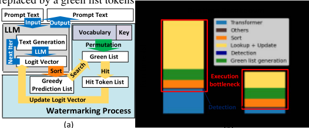
算法1给出了该算法的更多细节。首先，向LLM提供一段提示文本序列，针对每个词生成一个对应整个词表|V|的输出logit向量。接着，利用用户自定义的置换方案，生成一个大小为γ × |V|的“绿色列表”。第三，处理器将对logit向量进行排序，并从排序结果中检查N个最可能的词元；对于所有属于“绿色列表”的logit，向logit向量加上δ，然后进入下一次迭代。
由于加水印后的分布是在不知道绿色列表偏置的情况下生成的，用于水印检测的z分数可定义为：
|S|G为绿色列表词元的数量，T为词元的数量。若z分数超过某一阈值，则该文本被视为带有水印。
为了评估该技术的硬件成本，我们在本地个人设备上运行该算法，即具有128线程的AMD 3995WX CPU和NVIDIA RTX A6000，并使用与原始方法相同的小型LLM模型OPT-125M [7]。图2(b)展示了运行时间的分解情况。例如，实验中使用的词表大小为50272。绿色列表占词表的一部分，例如10%~40%，这对于水印处理过程而言是一个规模很大的数组。可以观察到，水印操作的运行时间超过了用于生成文本的Transformer模型的运行时间。水印处理过程的主要计算任务包括贪心预测查找、排序和绿色列表生成，这给LLM模型带来了显著的运行时间开销。本工作提出并在硬件中实现了一种加速架构，以降低端到端水印应用中的主要执行开销，并特别聚焦于三个主要计算任务，即查找、排序和绿色列表生成。
由于原始的查找操作需要对每个 token 进行大量的存储器搜索和数值比较（例如 O(绿名单大小)），为缓解图 2(b) 所示的主要计算瓶颈，本工作提出了一种硬件高效的哈希函数，用于加速绿名单（green list）的生成与查找操作。哈希函数可在一个周期内返回查找结果，并接受用户定义的密钥（在本方案中为 16 位）用于私有绿名单的生成。哈希函数的主要特性包括：
在本工作中，我们选择实现一种基于 Toeplitz 哈希方案的高效加密哈希函数，该方案在实现上对硬件更为友好。Toeplitz 函数描述如下：
设 A 为一个 n×n 矩阵。Toeplitz 矩阵定义为：
Toeplitz 哈希函数具有 𝐴𝑖,𝑗 = 𝐴𝑖+1,𝑗+1 的性质，且矩阵中每一列的值由相邻一列向下移位 1 位并在顶部添加 1 位而得到。
设 M 为由 m 位数据构成的输入密钥。定义 hA(M) 为 A 与转置后的 M 相乘所得的哈希结果，如 Algorithm 2 所示。
为支持 Algorithm 2 中给出的哈希函数，硬件只需提供 (m+n−1) 位即可定义整个 Toeplitz 矩阵，而无需 n×m 位，从而显著节省硬件资源。由于线性反馈移位寄存器（LFSR）电路具有低功耗和低硬件资源占用的特性，本工作采用 LFSR 电路来生成 Toeplitz 矩阵 [8, 9]。Toeplitz 矩阵的构成方式为：从底部开始提供 LFSR 的初始状态作为矩阵的第一列，并在每个时钟周期将前一列向下移位 1 位，同时把来自 LFSR 的新位添加到顶部。
Algorithm 2 Toeplitz Hash Function 1: procedure TOEPLITzHASH(M, h(x), s) 2: n ← degreeofh(x) 3: m ← lengthofmessageM 4: Initialize LFSR with h(x) and state s = (s0, s1, . . . , sn−1) 5: Generate LFSR sequence (s0, s1, . . . , sm+n–2) 6: Initialize Toeplitz matrix T of size n × m 7: for i = 0 to n − 1 do 8: for j = 0 to m − 1 do 9: T[i, j] ← si+j 10: end for 11: end for 12: Initialize hash value H ← 0 13: for j = 0 to m − 1 do 14: H ← H ⊕ (M[j] · T[:][j]) 15: end for 16: return H 17: end procedure
然而，通过将 LFSR 的连接限制为不可约多项式，该哈希函数的分布在 ε 很小时是 ε-平衡的 [x]：
其中 M 为 Toeplitz 矩阵，𝑃𝑟ℎ(ℎ(𝑀)) 表示当 ℎ ∈ 𝐻 时 h(M) 的概率，其中 H 为一个哈希函数集合。对于采用 32×32 Toeplitz 哈希矩阵的 16 位输入，最大偏差 𝜀 ≈ 0.000000022，从而使任一特定结果的概率显著偏离所有结果平均概率的可能性降至最低。
The watermarking algorithm, as introduced in Section II, necessitates sorting the vocabulary based on the logit vector derived from the Transformer for checking the most possible token candidates in green list. The sorting operations are the second largest computing tasks in watermarking process due to the large size of its target list, i.e. 65536 words in the vocabulary.
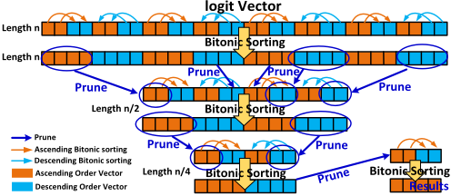
The indexes corresponding to the largest k logit values can provide fixed biasing to its logit values if the indexes are shown in the green list as well. Sorting a large vocabulary logit vector and retrieving the largest k values demands a highly performant algorithm. In comparison to widely used sorting algorithms such as quicksort, merge sort, selection sort, and heapsort, the bitonic sorting network [10, 11, 12] exhibits superior parallelism suitable for specialized hardware implementation. Given that our target platform is an FPGA, which offers hardware support for parallel processing and storage, we choose bitonic sorting network as the baseline sorting method. As shown in Fig. 3, the key principle underlying the bitonic sorting network involves initially sorting a logit vector in "ascending-descending" order and subsequently utilizing the bitonic merging function to sort it into "ascending" order. For the large vocabulary logit vector, the bitonic sorting network initiates the sorting process by handling small sub-vectors with a length of 4. It then iteratively extends this sorting procedure to larger sub-vectors until the entire logit vector is effectively sorted.
Algorithm 3 Pruned Bitonic Sorting Function Input: array : the 1-D array need to be sorted k : largest k values in the array Output: array : sorted array 1: direction = ascending or descending 2: n = length(array) = 2ⁿ, m is an integer and m ≥ 2 3: BITONICSoRT(array, ascending, k) 4: function BITONICSoRT(array, direction, k) 5: BITONICSORT(array[1 : n/2], ascending, k) 6: BITONICSORT(array[(n/2)+1 : n], descending, k) 7: PRUNEDBITONICMERGE(array, direction, k) 8: return array 9: end function 10: function PRUNEDBITONICMERGE(array, direction, k) 11: for i ← 1 to n/2 do 12: if array[i] and array[i+n/2] are in a wrong order then 13: Exchange array [i] and array [i+n/2] 15: 14: end for PRUNEDBITONICMERGE(array[1 : n/2], direction) 16: PRUNEDBITONICMERGE(array[(n/2)+1 : n], direction) 17: if n ≥ k then 18: ascending: array = array [n-k : n] 19: descending: array = array [1 : k] 20: return array 21: end function
为了优化水印的效率，仅对 k 个（例如 64 个）最可能的 token 对照绿名单进行检查。为了对最大的 k 个 logit 值进行排序并挑选出其索引，我们设计了一种剪枝双调排序网络（pruned bitonic sorting network，PBSN）。所提出的 PBSN 方法旨在减少处理时间，并消除对那些不可能进入最终结果前 k 名的 logit 值的冗余排序工作。PBSN 的细节在 Algorithm 3 中给出。在双调合并函数中，子向量完成排序后会执行一次长度检查，选择性地仅保留最大的 k 个值，而舍弃子向量中的其余值。直观地说，如果某个元素不属于某个子向量中最大的 k 个值，那么它也不可能属于整个词表 logit 向量中最大的 k 个值。表 1 给出了与其他知名排序算法在平均时间复杂度和空间复杂度方面的比较。所提出的剪枝双调排序算法在理论上相比未剪枝的双调排序可获得显著的时延改进，因为水印算法中的 k 明显小于 logit 向量长度 n，例如 65536。双调排序的复杂度计算假设使用 n/2 个比较器，其硬件成本将在下一节中描述。
| Algorithm | Bubble Sort | Quick Sort | Merge Sort | Bitonic | Pruned Bitonic |
|---|---|---|---|---|---|
| Time Complexity | O(n ) 2 | O(n logn) | O(n logn) | O(log n) 2 | O(log(n/k + 1)*log k) 2 |
| Space Complexity | O(1) | O(logn) | O(n) | O(nlog n) 2 | O(nlog k) 2 |
| Algorithm | Bubble Sort | Quick Sort | Merge Sort | Bitonic | Pruned Bitonic |
图 4 展示了所提出的面向 FPGA 实现的水印处理器设计的顶层架构。输入数据是来自 LLM 输出的逻辑向量，该向量被存储在预测缓冲区（prediction buffer）中，而词表则存储在水印缓冲区（watermark buffer）中。剪枝双调排序器（Pruned Bitonic Sorter）对来自预测缓冲区的 logit 向量进行排序，排序结果被发送到哈希网络（Hash Network）进行查找。LLM-MARK 控制单元（LLM-MARK Control）将查找结果更新到水印列表（watermarking list）中，以修改预测缓冲区中的 logit 向量，作为下一次迭代输入到 LLM 的数据。
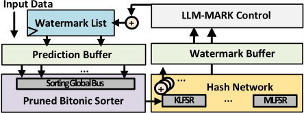
In this section, the hardware mapping, quantization effects and evaluation results are shown. The design is implemented on a Xilinx XCZU15EG UltraScale+ FPGA for evaluation. Fixed integer numbers are used for watermarking process compared with floating point in baseline algorithm.
来自大语言模型（LLM）的logit向量表示每个可能token的概率值，这些概率值将由所提出的水印处理器进行处理。由于本工作采用定点整数表示，概率值会被量化，从而导致绿名单中各词之间的区分度丢失。图5展示了在以来自C4（Colossal Clean Crawled Corpus）数据集[13]的文本作为输入进行水印处理时，不同精度和不同γ（绿名单大小占整体词表大小的百分比）下的量化损失和整体水印置信度。
如图5(a)所示，第一次迭代中生成绿名单的余弦相似度从12比特开始下降。如算法1所示，绿名单被用于对logit向量的概率进行修改，由此可以观察到水印结果出现偏差，如图5(b)所绘。在所有测试用例中，16比特与fp32相比没有水印损失，而在10比特附近相似度出现大幅下降，这将导致水印后的文本与原始水印文本急剧发散。z分数同样从10-12比特开始下降。
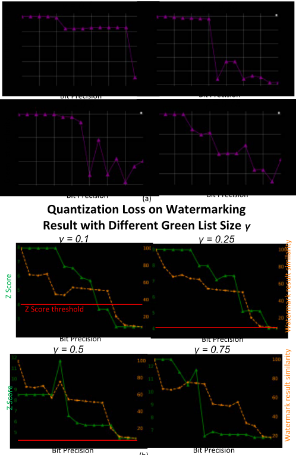
图6展示了基于线性反馈移位寄存器（LFSR）的Toeplitz哈希函数的硬件（HW）实现。矩阵LFSR（MLFSR）用于构建算法2中引入的Toeplitz哈希矩阵。MLFSR中的每个连续状态代表Toeplitz哈希矩阵的每一列，其反馈多项式的阶数为2n。密钥LFSR（KLFSR）用于对输入密钥进行编码，即将密钥与当前状态以及KLFSR的反馈输出进行异或（XOR），并将其馈入Toeplitz哈希矩阵，以得到用于哈希查找的结果密钥流。
通过这种方式，所提出的哈希模型的周期性为(2 2𝑛 -1)(2 𝑚 -1)，其中n为Toeplitz矩阵的列长度，m为输入密钥的位长度。
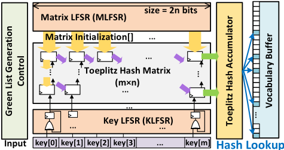
在绿名单生成过程中，绿名单生成的吞吐量与效率定义为：
为了实现最高效、最快速的绿名单生成，我们希望以最高的Eg来提升Tg。图7(a)展示了与非流水线基线方案相比，不同哈希矩阵规模下的哈希吞吐量。在不同的列+行位数（26、28、30、32）下，哈希函数的平均吞吐量提升了14.5倍。图8(b)展示了绿名单生成的加速
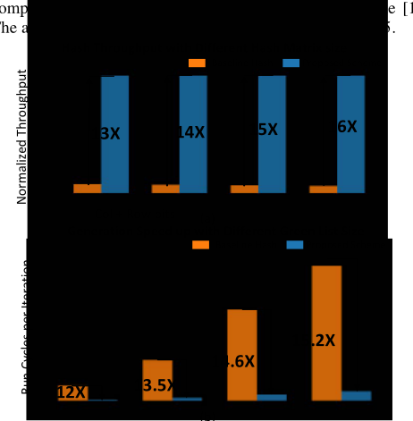
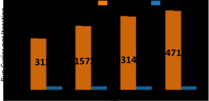
所提出的方案在Xilinx XCZU15EG现场可编程门阵列（FPGA）上实现，采用流水线化的生成与查找方案。如图7(c)所示，针对不同绿名单规模的查找，平均加速比达到243倍，消除了绿名单生成与查找在执行时间方面的主要开销。
如图8所示，所提出的采用剪枝双调排序（pruned bitonic sorting）算法的排序器在FPGA中由128个块RAM（block RAM）和一个128单元的16b数字比较器阵列构成。每个logit数据包含一个16b索引和一个16b数值。专门设计了一条32*256b总线，用于从块RAM中读取logit数据并存储部分和结果。鉴于词表logit向量的庞大规模与有限硬件资源之间的差距，需要多个周期以及输入数据管理模块和有限状态机控制器才能完成双调排序算法的单次迭代。剪枝功能被集成到数字比较器中，以从比较器输出中选择性地仅保留前k个值。
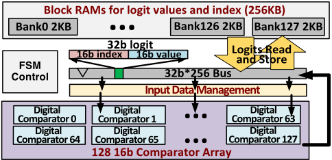
在水印算法中，基于原始算法[6]，k为40，向量长度（n）为50272。双调排序的一个局限是n必须为2的幂，我们通过填充零来解决这一问题。剪枝双调排序器的FPGA评估结果如图9所示。与未剪枝的双调排序器相比，剪枝双调排序器实现了4.9倍的运行周期缩减；与广泛使用的快速排序算法相比，实现了34.7倍的加速。
双调排序
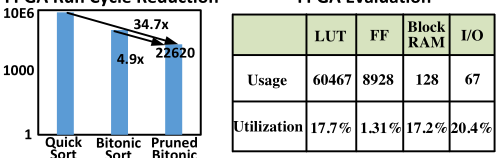
| LUT | FF | Block RAM | I/O | |
|---|---|---|---|---|
| Usage | 60467 | 8928 | 128 | 67 |
| Utilization | 17.7% | 1.31%17.2%20.4% |
| | LUT | FF | Block RAM | I/O |
所提出的水印处理器的设计在 Xilinx XCZU15EG 现场可编程门阵列（FPGA）板卡上实现。图10展示了一块板卡，其包含一颗 Zynq UltraScale+ 15EG 芯片、2GB DDR4 DRAM 以及 3.7MB SRAM。水印设计以16位精度在该板卡上实现，以悲观地防止因量化损失导致的文本退化，其中绿名单（greenlist）大小为12566，词表大小为50272，平均生成80个新 token。图10(b)展示了从 C4 数据集中随机选取的100个结果。对于16位水印，所有生成的文本均与浮点水印结果相同。所有带水印文本的 z 分数均高于4.0，而无水印文本的 z 分数均低于4，因此检测的置信度为100%。使用 C4 数据集的总体运行周期如图10(b)所示。包括大语言模型（LLM）执行在内，每个生成的 token 平均延迟为0.052秒。与 FPGA 上的基线实现相比，所提出的方案在水印生成方面实现了30倍加速，在水印检测方面实现了22.8倍加速。图10(d)展示了该设计的总体硬件资源。
| SoC | XCZU15EG-2FFVB1156I |
|---|---|
| Logic Cells | 747K |
| DDR4 | PL 2GB DDR4, 32bit |
| BRAM | 26.2Mb |
| SoC | XCZU15EG-2FFVB1156I |
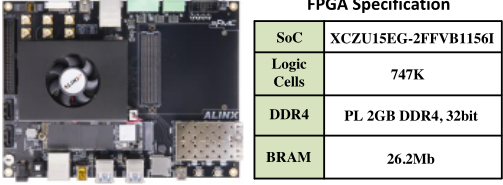
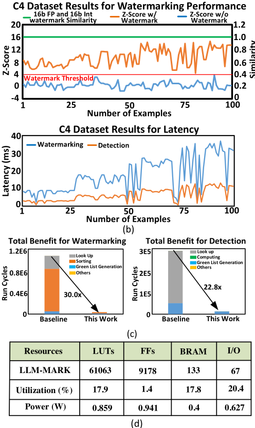
相似度
| Resources | LUTs | FFs | BRAM | I/O |
|---|---|---|---|---|
| LLM-MARK | 61063 | 9178 | 133 | 67 |
| Utilization (%) | 17.9 | 1.4 | 17.8 | 20.4 |
| Power (W) | 0.859 | 0.941 | 0.4 | 0.627 |
| (d) | (d) | (d) | (d) | (d) |
| Resources | LUTs | FFs | BRAM | I/O |